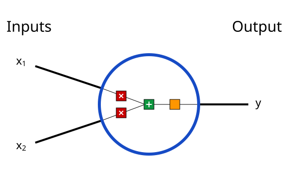
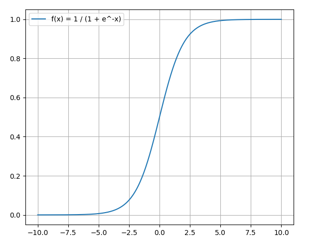
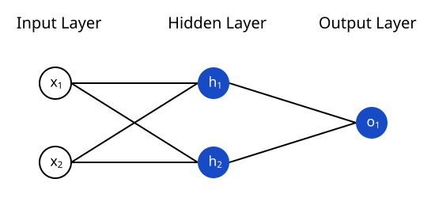
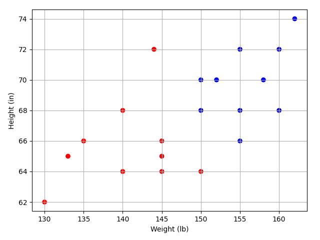

1.7 Neural Network from Scratch
A simple explanation of how they work and how to implement one from scratch in Python.
Created Date: 2025-05-10
Here’s something that might surprise you: neural networks aren’t that complicated! The term “neural network” gets used as a buzzword a lot, but in reality they’re often much simpler than people imagine.
This post is intended for complete beginners and assumes ZERO prior knowledge of machine learning. We’ll understand how neural networks work while implementing one from scratch in Python.
Let’s get started!
1.7.1 Building Blocks: Neurons
First, we have to talk about neurons, the basic unit of a neural network. A neuron takes inputs, does some math with them, and produces one output. Here’s what a 2-input neuron looks like:

3 things are happening here. First, each input is multiplied by a weight:
\(x_1 \rightarrow x_1 * w_1\)
\(x_2 \rightarrow x_2 * w_2\)
Next, all the weighted inputs are added together with a bias b:
Finally, the sum is passed through an activation function:
The activation function is used to turn an unbounded input into an output that has a nice, predictable form. A commonly used activation function is the sigmoid function:

The sigmoid function only outputs numbers in the range \((0, 1)\). You can think of it as compressing \((-\infty, +\infty)\) to \(0, 1\) - big negative numbers become \(~0\), and big positive numbers become \(~1\).
For more information, you can read section 2.4 Activation Function.
1.7.1.1 A Simple Example
Assume we have a 2-input neuron that uses the sigmoid activation function and has the following parameters:
\(w = [0, 1]\)
\(b = 4\)
\(w = [0, 1]\) is just a way of writing \(w_1 = 0, w_2 = 1\) in vector form. Now, let’s give the neuron an input of \(x = [2, 3]\). We'll use the dot product to write things more concisely:
\((w \cdot x) + b = ((w_1 * x_1) + (w_2 * x_2)) + b = 0 * 2 + 1 * 3 + 4 = 7\)
\(y = f(w \cdot x + b) = f(7) = 0.999\)
The neuron outputs 0.999 given the inputs \(x = [2, 3]\). That’s it! This process of passing inputs forward to get an output is known as feedforward.
1.7.1.2 Coding a Neuron
Time to implement a neuron! We’ll use NumPy, a popular and powerful computing library for Python, to help us do math, File neuron.py show a neuron how to work:
import numpy
def sigmoid(x):
# Our activation function: f(x) = 1 / (1 + e^(-x))
return 1 / (1 + numpy.exp(-x))
class Neuron:
def __init__(self, weights, bias):
self.weights = weights
self.bias = bias
def feedforward(self, inputs):
# Weight inputs, add bias, then use the activation function
total = numpy.matmul(self.weights, inputs) + self.bias
return sigmoid(total)
# w1 = 0, w2 = 1
weights = numpy.array([0, 1])
# b = 4
bias = 4
# x1 = 2, x2 = 3
x = numpy.array([2, 3])
neuron = Neuron(weights, bias)
# 0.9991
print('Neuron output is', round(neuron.feedforward(x), 4))Recognize those numbers? That’s the example we just did! We get the same answer of 0.999.
1.7.2 Combining Neurons into a Neural Network
A neural network is nothing more than a bunch of neurons connected together. Here’s what a simple neural network might look like:

This network has 2 inputs, a hidden layer with 2 neurons (\(h_1\) and \(h_2\)), and an output layer with 1 neuron (\(o_1\)). Notice that the inputs for \(o_1\) are the outputs from \(h_1\) and \(h_2\) - that's what makes this a network.
A hidden layer is any layer between the input (first) layer and output (last) layer. There can be multiple hidden layers!
1.7.2.1 An Example: Feedforward
Let’s use the network pictured above and assume all neurons have the same weights \(w = [0, 1]\), the same bias \(b = 0\), and the same sigmoid activation function. Let \(h_1, h_2, o_1\) denote the outputs of the neurons they represent.
What happens if we pass in the input \(x = [2, 3]?\)
\(h_1 = h_2 = f(w \cdot x + b) = f((0 * 2) + (1 * 3) + 0) = f(3) = 0.9526\)
\(o_1 = f(w \cdot [h1, h2] + b) = f((0 * h_1) + (1 * h_2) + 0) = f(0.9526) = 0.7216\)
The output of the neural network for input \(x = [2, 3]\) is 0.7216. Pretty simple, right?
A neural network can have any number of layers with any number of neurons in those layers. The basic idea stays the same: feed the input(s) forward through the neurons in the network to get the output(s) at the end. For simplicity, we’ll keep using the network pictured above for the rest of this post.
1.7.2.2 Coding a Neural Network: Feedforward
Let’s implement feedforward for our neural network. File :
# ... code from previous section here
class OurNeuralNetwork:
'''
A neural network with:
- 2 inputs
- a hidden layer with 2 neurons (h1, h2)
- an output layer with 1 neuron (o1)
Each neuron has the same weights and bias:
- w = [0, 1]
- b = 0
'''
def __init__(self):
weights = numpy.array([0, 1])
bias = 0
# The Neuron class here is from the previous section.
self.h1 = Neuron(weights, bias)
self.h2 = Neuron(weights, bias)
self.o1 = Neuron(weights, bias)
def feedforward(self, x):
out_h1 = self.h1.feedforward(x)
out_h2 = self.h2.feedforward(x)
# The inputs for o1 are the outputs from h1 and h2.
out_o1 = self.o1.feedforward(numpy.array([out_h1, out_h2]))
return out_o1
network = OurNeuralNetwork()
x = numpy.array([2, 3])
# 0.7216
print(round(network.feedforward(x), 4))We got 0.7216 again! Looks like it works.
1.7.3 Training a Neural Network
File simple_network.py documents a complete neural network that takes as input a person's height and weight and predicts the person's gender.
1.7.3.1 Height-Weight Dataset
Say we have the following measurements:
| Weight(lb) | height(in) | Gender |
|---|---|---|
| 160 | 72 | 1 |
| 150 | 70 | 1 |
| 145 | 66 | 0 |
| 152 | 70 | 1 |
| 145 | 65 | 0 |
| 150 | 64 | 0 |
| ... | ... | ... |
Only the first six data are displayed, 0 for famale, and 1 for male. All the data is shown in the figure below, blue represents males and red represents females:

Let’s train our network to predict someone’s gender given their weight and height:
The data needs to be preprocessed by finding the average of height and weight and subtracting the average from all values:
average_weight = int(round(x.sum() / len(x)))
average_height = int(round(y.sum() / len(y)))
print('Average weight:', average_weight)
print('Average height:', average_height)
x = x - average_weight
y = y - average_height
print('Processed weight:', x)
print('Processed height:', y)Average weight: 148 Average height: 68 Processed weight: [-15 12 2 -3 4 -3 2 7 -8 -18 2 -8 -13 12 7 -3 14 7 10 -4] Processed height: [-3 4 2 -2 2 -3 -4 -2 -4 -6 0 0 -2 0 0 -4 6 4 2 4]
1.7.3.2 MSE Loss
Before we train our network, we first need a way to quantify how “good” it’s doing so that it can try to do “better”. That’s what the loss is.
We’ll use the mean squared error (MSE) loss:
Let’s break this down:
\(n\) is the number of samples, which is 20 (10 with males, and 10 with females).
\(y\) represents the variable being predicted, which is Gender.
\(y_{true}\) is the true value of the variable (the “correct answer”).
\(y_{pred}\) is the predicted value of the variable. It’s whatever our network outputs.
\({(y_{true} - y_{pred})}^2\) is known as the squared error. Our loss function is simply taking the average over all squared errors (hence the name mean squared error). The better our predictions are, the lower our loss will be!
Better predictions = Lower loss.
Training a network = trying to minimize its loss.
Let’s say our network always outputs 0 - in other words, it’s confident all humans are Female. What would our loss be?
For more information, you can read section 2.5 Loss Function.
1.7.3.3 Calculating Derivative
We now have a clear goal: minimize the loss of the neural network. We know we can change the network’s weights and biases to influence its predictions, but how do we do so in a way that decreases loss?
This section uses a bit of multivariable calculus. If you’re not comfortable with calculus, you can read section 1.5 Calculus.
For simplicity, let’s pretend we only have one sample in our dataset:
| Weight (minus 148) | height (minus 68) | Gender |
|---|---|---|
| -15 | -3 | 1 |
Then the mean squared error loss is just squared error:
Another way to think about loss is as a function of weights and biases. Let’s label each weight and bias in our network:
Then, we can write loss as a multivariable function:
Imagine we wanted to tweak \(w_1\), How would loss \(L\) change if we changed \(w_1\)?
That’s a question the partial derivative \(\frac{\partial{L}}{\partial{w_1}}\) can answer. How do we calculate it?
Here’s where the math starts to get more complex. Don’t be discouraged! I recommend getting a pen and paper to follow along - it’ll help you understand.
1.7.3.4 Gradient Descent
To start, let’s rewrite the partial derivative \(\frac{\partial{L}}{\partial{w_1}}\) in terms of \(\frac{\partial{y_{pred}}}{\partial{w_1}}\) instead:
This works because of the Chain Rule. We can calculate